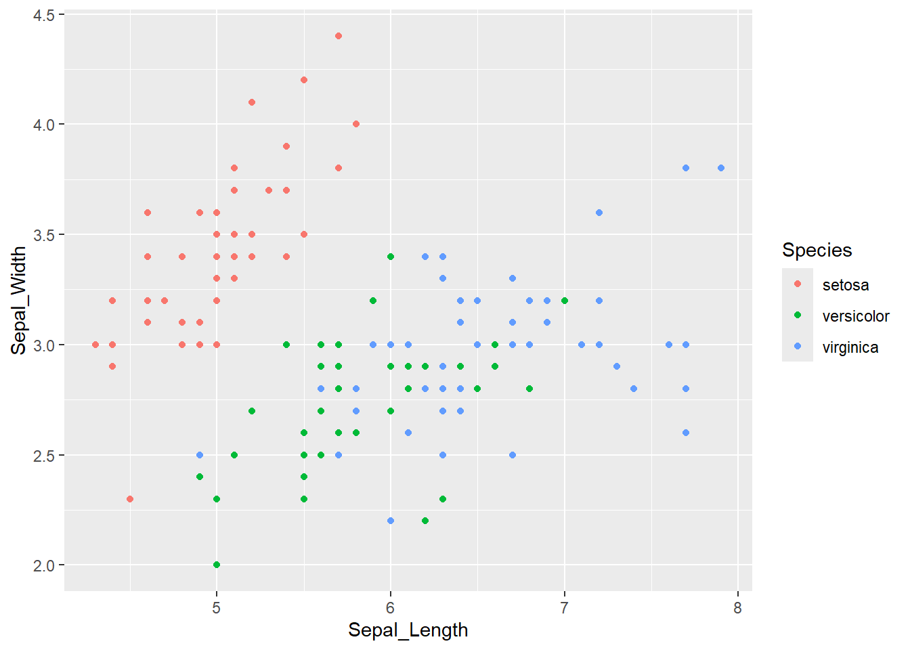

names(iris) <- stringr::str_replace_all(names(iris), '\\.', '_')Trying observablejs chunks
Quarto has the option of using Observable JS for code chunks. This gives the ability to add interactivity in-browser, without needing to do server-side calcs, as we do with Shiny. The catch is with Shiny, I can serve R objects (e.g. ggplots) that I’m familiar with. Using observable means I need to figure out how that system works. I’m also a bit unclear how much processing can happen. My understanding is that any actual processing that happens needs to happen in the ojs, not R chunks, so we can’t interactively change a setting in the observable chunk and have that kick off some R. Though I might be wrong.
I have quite a few use cases in mind if I can get this to work- serving maps, as an interface to {hydrogauge}, some drone settings, playing with population models, etc.
ISSUES
Interactive notebooks
The ojs chunks dont work in interactive mode, and throw errors like “Error in ojs_define(iris = iris) : could not find function”ojs_define”“. So to work on anything past the first ojs chunk requires rendering. But that brings us to the next issue:
No output
Observable chunks don’t have output unless you use quarto preview, not just quarto render. And the ‘Render’ button in Rstudio renders and previews, making this more confusing. JUST RUNNING quarto render doc.qmd at the terminal yields a document with code chunks but no output. This is expected behavior, but is super counter intuitive, espcially given the Render button’s name.
Unfortunately, there is no per-document quarto preview at the terminal like there is for quarto render. So if you’re working in a quarto project (website, book, etc), you have to preview the whole thing just to check a document.
That means you’ll almost certainly want to turn caching on for the project (probably do anyway if it’s big), but if caching is on for the quarto project, it won’t render because the ojs_defined object can’t be cached. So the chunk with ojs_define needs to have #| cache: false added to it. Or perhaps just turn caching off in the yaml headers for pages using ojs. Depends on how much pre-processing happens in R, probably.
Chunk options
Python and R both use #| option: value for setting chunk options. ojs cells use //| option: value.
Column names
Observable uses object.thing notation like python, but it also uses the . to reference columns in arquero. That means Sepal_Length is confusing, because it gets referenced as d.Sepal_Length. So change the names.
Code changes
I’m running into issues where I change some R code, and it works when I run it interactively, but then when I go to render, the new R code just doesn’t happen. E.g. I’ll add code that makes a dataframe with more values, and I can see them interactively in R, but they don’t appear in the render. I think it has something to do with the cache not resetting with changes, but I’m not positive.
R setup
library(ggplot2)I know the cool thing to do is {palmerpenguins}, but I’m just going to use {iris}.
I have a feeling ojs is likely just as happy plotting vectors, but I’ll tend to have dataframes from analyses, so let’s stick with that.
To start, can we reproduce a simple ggplot?
ggplot(iris, aes(x = Sepal_Length, y = Sepal_Width, color = Species)) + geom_point()
Let’s try that without reactivity to start.
Data to ojs
It seems like Arquero makes a lot of sense, since it’s dplyr-like. But the example (and all other examples I can find) use it to read data in from an external file (csv, json, etc). That’s almost never what I’m going to want to do. So, how do I get a dataframe into Arquero? I’m guessing I can’t just grab it. The data sources documentation says we need to use ojs_define in R to make things available. Let’s see if we can do that and then make it an arquero object?
NOTE I’ve not seen this mentioned anywhere, but ojs_define cannot be found in an interactive session- it’s only available on render. So interactively it throws “Error in ojs_define(iris = iris) : could not find function”ojs_define”“. AND, if caching is on for the quarto project, it won’t render because the ojs_defined object can’t be cached.
ojs_define(iris = iris)Can I see that in ojs? I thought .view made tables? Maybe not if we haven’t imported arquero? But I also thought order didn’t matter for ojs.
iris.view()Anyway, we can see it as an object (once we preview instead of render). I’m still grumpy about that.
irisI think we usually need to transpose according to various stackexchanges.
tiris = transpose(iris)
tirisNow, the arquero docs seem to suggest I might be able to use from to make it arquero?
import { aq, op } from '@uwdata/arquero'
irtab = aq.from(iris)
irtab.view()That does look like it’s the wrong dims, let’s used the transposed.
tirtab = aq.from(tiris)
tirtab.view()Plots
To make a first plot, do something I’m pretty sure should work, stolen directly from the penguins example that starts with a dataframe and just modifying the name and removing a facet level.
Plot.rectY(tiris,
Plot.binX(
{y: "count"},
{x: "Sepal_Width", fill: "Species", thresholds: 10}
))
.plot({
facet: {
data: tiris,
y: "Species",
marginRight: 80
},
marks: [
Plot.frame(),
]
}
)Scatter
Now, can we make a scatter?
Plot.dot(tiris, {x: "Sepal_Length", y: "Sepal_Width", fill: "Species"}).plot()There’s lots of cleanup we could do to make that look different, but let’s go with that for now.
Can I make a line? It’ll be jumbled, but whatever. Maybe I can sort it at least with arquero.
Remember to use the arquero version of the data- this barfs with tiris.
tirtab
.orderby('Sepal_Length')
.view()Now, how to plot that? Does the chunk above order tirtab permanently? Doesn’t seem to
tirtab.view()Line
Let’s try the line with the orderby
Plot.line(tirtab.orderby('Sepal_Length'), {x: "Sepal_Length", y: "Sepal_Width", fill: "Species"}).plot()That seems to have worked, but it sure is goofy looking. Oh. Is it because i’m using fill? Use stroke (not color- this isn’t ggplot).
Plot.line(tirtab.orderby('Sepal_Length'), {x: "Sepal_Length", y: "Sepal_Width", stroke: "Species"}).plot()Would be good to not do the data processing inside the plot call.
I assume that’s as easy as
irorder = tirtab.orderby('Sepal_Length')
Plot.line(irorder, {x: "Sepal_Length", y: "Sepal_Width", stroke: "Species"}).plot()Point and line
Need to figure this out. Can I just do both? I think the answer might be to use a Plot.plot with mutliple marks?
First, how does that syntax work? This should just recreate the above, right?
Plot.plot({
grid: false,
marks: [
Plot.line(irorder, {x: "Sepal_Length", y: "Sepal_Width", stroke: "Species"})
]
})can we just add more Plot.marktypes?
Plot.plot({
grid: false,
marks: [
Plot.line(irorder, {x: "Sepal_Length", y: "Sepal_Width", stroke: "Species"}),
Plot.dot(irorder, {x: "Sepal_Length", y: "Sepal_Width"})
]
})Cool. Would be nice if there was a ggplot-esque way to use the same x,y,color and just change the marks. Maybe there is? Look for that later.
Moving toward reactivity, let’s say I only want dots where Sepal_Length > 5 and < 6
I don’t quite seem to know the filter syntax. Not entirely sure what the d=> means. Seems to be an internal reference to the data, but that feels weird and extra. I can get it to work, but doing anything complicated will require more thinking I think. Note that almost all the examples I can find use op.operation and so confused me for a bit thinking I needed op. The op access mathematical operations like abs, round, etc, and here I just need a simple ><.
sl_filter = irorder
.filter(d => (d.Sepal_Length < 6 & d.Sepal_Length > 5))
sl_filter.view()Now use that in a plot
Plot.plot({
grid: false,
marks: [
Plot.line(irorder, {x: "Sepal_Length", y: "Sepal_Width", stroke: "Species"}),
Plot.dot(sl_filter, {x: "Sepal_Length", y: "Sepal_Width"})
]
})That seems to work
Reactivity
The thing here is to use viewof and Inputs.typeofinput. But what are those types? The observable docs seem to have a good overview.
Let’s replicate the above, but also allow selecting the species. Basically following the quarto docs, but with a couple modifications. There’s got to be a way to obtain the ranges, species names, etc in code and not hardcode them in.
viewof min_sl = Inputs.range(
[4, 8],
{value: 5, step: 0.1, label: "Min Sepal Length:"}
)
viewof max_sl = Inputs.range(
[4, 8],
{value: 6, step: 0.1, label: "Max Sepal Length:"}
)
viewof sp = Inputs.checkbox(
["setosa", "versicolor", "virginica"],
{value: [],
label: "Species"
}
)I like the tabset thing they do in the help, but to keep it simple just make the plot.
I’m going to filter the data in its own chunk to try to aid figuring this out.
The .params here is needed to use the reactive values, and then gets referenced as $, while the data is d.
spfilter = irorder
.params({
spf: sp
})
.filter((d, $) => op.includes($.spf, d.Species))
spfilter.view()sizefilter = spfilter
.params({
minsl: min_sl,
maxsl: max_sl
})
.filter((d, $) => d.Sepal_Length > $.minsl && d.Sepal_Length < $.maxsl)
sizefilter.view()And plot
Plot.plot({
grid: false,
marks: [
Plot.line(spfilter, {x: "Sepal_Length", y: "Sepal_Width", stroke: "Species"}),
Plot.dot(sizefilter, {x: "Sepal_Length", y: "Sepal_Width"})
]
})That seems to work. Can I package it up pretty like in the example?
Making better UX
Let’s build that same thing, but at least kill off displaying code. We need to use different names here because ojs is reactive and so you can’t define variables in two places. Maybe I’ll just use petals instead of sepals.
Fancy layouts
See the quarto layouts docs for help here, I’ll only try a couple things.
Tabset
Make a tabset with the plot and data